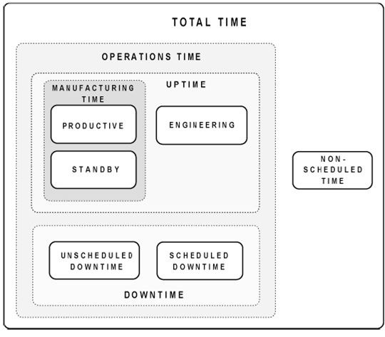

Report Types
OEE
(Overall Equipment Effectiveness)
Overall
equipment effectiveness quantifies how well a manufacturing unit performs
relative to its designed capacity, during the periods when it is scheduled to
run. The formula to calculate OEE is
| OEE = | Good devices | x | Devices Tested | x | Test time + Index time (Test) | + | Good devices | x | Devices Tested | x | Test time + Index time (Retest) |
| Devices tested | | Sites available | | Total time | | Devices tested | | Sites available | | Total time |
Grouping
Options: All, Equipment
Type, Test Head, Date, Crew, Crew and Test Head, Test Program, Device and
Temperature.
UOEE
(Uncompromising Overall Equipment Effectiveness)
Effective
Utilization, also known as Uncompromising OEE. Is a simplified version of OEE.
The product of Availability Efficiency and Operational Efficiency. This metric comprehends tool
utilization for all products (good units, bad units, redos, and retests). UOEE focuses on Capital Utilization.
| UOEE = | Test time + Index time (State = Productive) |
| Total time |
Grouping Options: All, Equipment Type, Test Head,
Date, Crew, Crew and Test Head, Test Program, Device and Temperature.
Utilization
E10
Utilization
of the Equipment using the states defined in SEMI E10 Standard for definition
and measurement of equipment reliability, availability and maintainability
The states are
- Productive
- Standby
- Engineering
- Scheduled Downtime
- Unscheduled Downtime
- Non Scheduled

Grouping Options: All, Equipment Type, Test Head, Date, Crew,
Crew and Test Head, Test Program, Device, Product Line, and Temperature.
Utilization
all states
Utilization
of the equipment using subsstates. Also known as waterfall report. These
substates are sent in the SUBSTATE context variable in EPR++ events. The
formulas used for this report are listed below:
| OEE = | Good devices | x | Devices Tested | x | Test time + Index time (Test) | + | Good devices | x | Devices Tested | x | Test time + Index time (Retest) |
| Devices tested | | Sites available | | Total time | | Devices tested | | Sites available | | Total time |
| First Pass Site Performance Loss = | Sites available – Devices tested | x | Good devices | x | Test time + Index time (Substate =Test) |
| Sites available | | Devices tested | | Total time |
| First Pass Yield Loss = | Devices tested - Good devices | x | Test time + Index time (Substate = Test) |
| Devices tested | | Total time |
| Retest Gain = | Good devices | x | Devices Tested | x | Test time + Index time (Substate = Retest) |
| Devices tested | | Sites available | | Total time |
Grouping Options: All,
Equipment Type, Test Head, Date, Crew, and Temperature.
Losses
Losses report according to the
groups defined in the states window
Grouping Options: All, Equipment Type, Test Head, Date, Crew,
Crew and Test Head, Test Program, Device and Temperature.
Losses
Breakdown
Losses report according to the
substates and groups defined in the States window
Grouping Options: All, Equipment Type, Test Head, Date, Crew
and Temperature.
Setup Type
Reports the Source of the set up
settings for the equipment, e.g. Manual, Genesis, etc.
Grouping Options: All, Equipment Type, Test Head, Date, Crew,
Crew and Test Head, Test Program, Device and Temperature.
Devices
processed
Total of Devices processed by the
equipments selected in the period specified
Grouping Options: All, Equipment Type, Test Head, Date, Crew,
Lot, Test Program, Device, Temperature and Device, Temperature, and Product
Line.
Yield
| Yield = | Good Devices |
| Devices Tested |
Grouping Options: All, Equipment Type, Test Head, Date, Crew,
Lot, Test Program, Device, Temperature and Device, Temperature, and Product
Line.
Site Yield
| Site Yield = | Sites HB1 |
| Sites HB$ |
Grouping Options: All, Equipment Type, Test Head, Date, Crew,
Lot, Test Program, Device, Temperature and Device and Temperature.
Site
Performance
| Site Performance = | Devices Tested |
| Sites Available x Insertions |
Grouping Options: All, Equipment Type, Test Head, Date, Crew,
Lot, Test Program, Device, Temperature and Device and Temperature.
Total test
time
The total Test time for the
Equipment selected in the period specified
Grouping Options: All,
Equipment Type, Test Head, Date, Crew, Lot, Test Program, Device, Temperature
and Device, Temperature, and Product Line.
Avg, test time
| Avg. test time = | Test Time |
| Devices Tested |
Grouping Options: All, Equipment Type, Test Head, Date, Crew,
Lot, Test Program, Device, Temperature and Device, Temperature, and Product
Line.
Avg. index test time
| Avg. index test time = | Index Time |
| Devices Tested |
Grouping Options: All, Equipment Type, Test Head, Date, Crew,
Lot, Test Program, Device, Temperature and Device, Temperature, and Product
Line.
Yield Loss
| Yield Loss = | (Devices Tested - Good Devices) | x | Test time + Index time |
| Devices Tested | | Total Time |
Grouping Options: All, Equipment Type, Test Head, Date, Crew,
Lot, Test Program, Device, Temperature and Device and Temperature.
Tester Performance Variation
Text report that includes the
following metrics.
- Avg. Test Time
- Avg. Index Test time
- UOEE
- Yield
- Site Yield by individual site
Grouping Options: All and Test Head.
Tester Utilization
Text report that includes the
following metrics.
- Avg. Test Time
- Avg. Index Test time
- UOEE
- Site Performance
- Yield
Grouping Options: Test Head and Lot.
Jam Alarms
Summary of the jam alarms received by
the equipment
Grouping Options: Test Head.
Data
It is an extract of the summary
files for the test head and period selected
Grouping Options: Test Head.
State Transitions
State transitions for the test head
and the dates selected, dates must be raw.
Grouping Options: Test Head.
Substate Transitions
Substate transitions for the test
head and the dates selected, dates must be raw.
Grouping Options: Test Head.
PNP Performance
includes the records where PNP_SITES_AVAILABLE is defined
When this report is scheduled to be e-mailed the e-mail includes a summary with the average PNP as calculated by the following formula :
averagePNP = (pnp count / location count) / total Handler * 100
Grouping Options:Test Head.